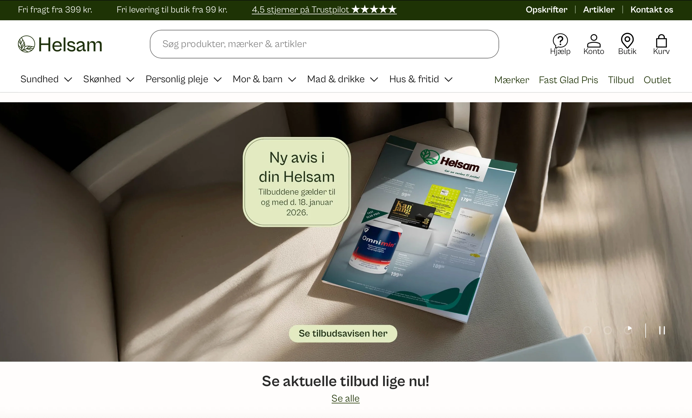

Temaet
I tema 5 arbejdede jeg i gruppe med udviklingen af et virksomhedssite. Opgaven bestod i at udvælge en eksisterende virksomhed med et mindre velfungerende website og udvikle et nyt forslag til en forbedret løsning.
Temaet havde fokus på at gentænke struktur, indhold og design med udgangspunkt i virksomhedens identitet samt brugerens behov.
